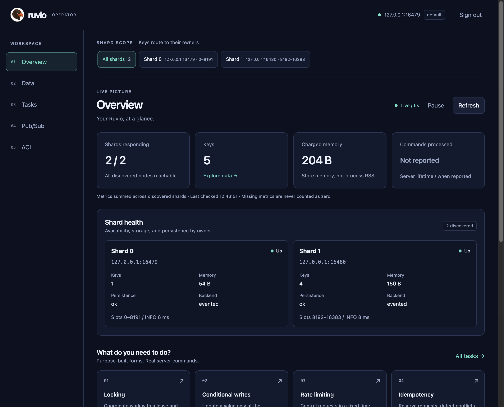
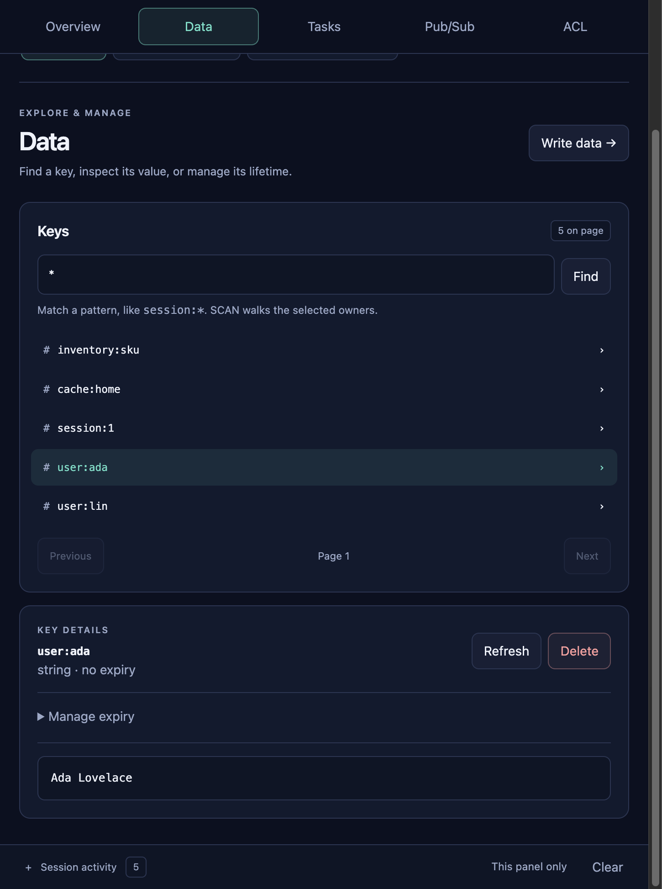
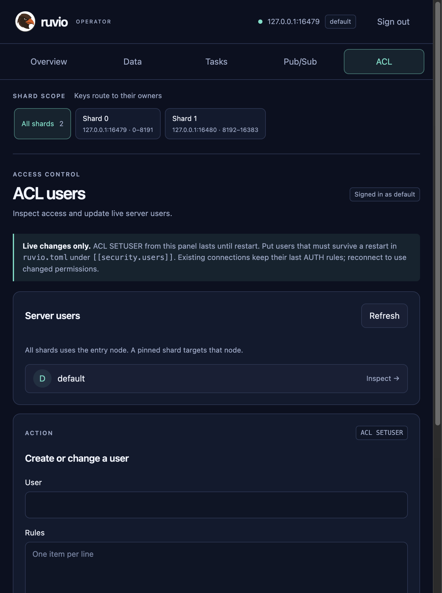

Operator UI
Ruvio UI is a browser for one running server. The page talks HTTP to a small process. That process talks RESP through ruvio-client. There is no second database of portal accounts. The user and password on the sign-in form are the server’s ACL identity.

Install and run
The image is salihcantekin/ruvio-ui. linux and latest are the same bits. Docker selects amd64 or arm64. RUVIO_UI_TARGET_HOST and RUVIO_UI_TARGET_PORT are the Ruvio server, the same host and port as RUVIO_ADDR.
A default server is 127.0.0.1:6379. If Ruvio listens somewhere else, put that address here. Port 8080 is only the UI.
docker pull salihcantekin/ruvio-ui:linux docker run --rm -p 8080:8080 \ -e RUVIO_UI_TARGET_HOST=127.0.0.1 \ -e RUVIO_UI_TARGET_PORT=6379 \ salihcantekin/ruvio-ui:linux
Open http://127.0.0.1:8080. The form is filled with that Ruvio address. Leave User and Password empty when that server has no requirepass, then press Enter. A checkout can still build the same image with docker compose up --build in clients/ruvio-ui.
The same binary, without Docker, needs Node and Rust:
cd clients/ruvio-ui/web npm install npm run build cd .. cargo run --release
If 8080 is already taken, bind another port: RUVIO_UI_ADDR=127.0.0.1:8081 cargo run --release. RUVIO_UI_TARGET_HOST, RUVIO_UI_TARGET_PORT, and RUVIO_UI_TARGET_PASSWORD pre-fill the form. They do not skip Enter.
Who the sign-in user is
An empty user and an empty password send no AUTH. The connection is the built-in default user. With no requirepass, that user is on, has no password, and can run every command (on nopass ~* +@all).
A password alone sends AUTH password, which signs in as default. A user and a password send AUTH user password.
default always exists. requirepass in ruvio.toml, or RUVIO_REQUIREPASS, is that user’s password. Extra users that should survive a restart go in the file:
[[security.users]] name = "app" rules = "on >app-secret ~app:* +@read +ping +auth +info"
on enables the account, >app-secret sets the password, ~app:* limits keys, and +@read limits commands. The process reads this list at startup. See Configuration.
Shards
After sign-in, every screen shares the shard bar. All shards uses the cluster client: a keyed command follows the slot, and SCAN keeps walking until the page is full or every shard has been visited. Picking one shard pins Data, Tasks, and Pub/Sub to that node. A SCAN on one node returns only that node’s keys.
What you can do
Overview refreshes shard health. Data finds keys and opens the value. Tasks is the command desk: locking, conditional writes, rate limits, idempotency, inventory, sliding sessions, delayed jobs, and the change feed, next to the usual data-type forms. Pub/Sub subscribes and publishes on the selected scope. Session activity at the bottom stays closed until you open it. Each line is one client call and how long it took.

Managing users
The ACL screen sends ACL LIST, ACL USERS, ACL WHOAMI, ACL GETUSER, and ACL SETUSER. ACL SETUSER changes the running process. A restart drops those changes and loads [[security.users]] again.
Put a user in the TOML file when it must still be there after the next start. ACL SETUSER is refused while replication is on, because that directory is not part of the snapshot.

default. A change here lasts until restart.